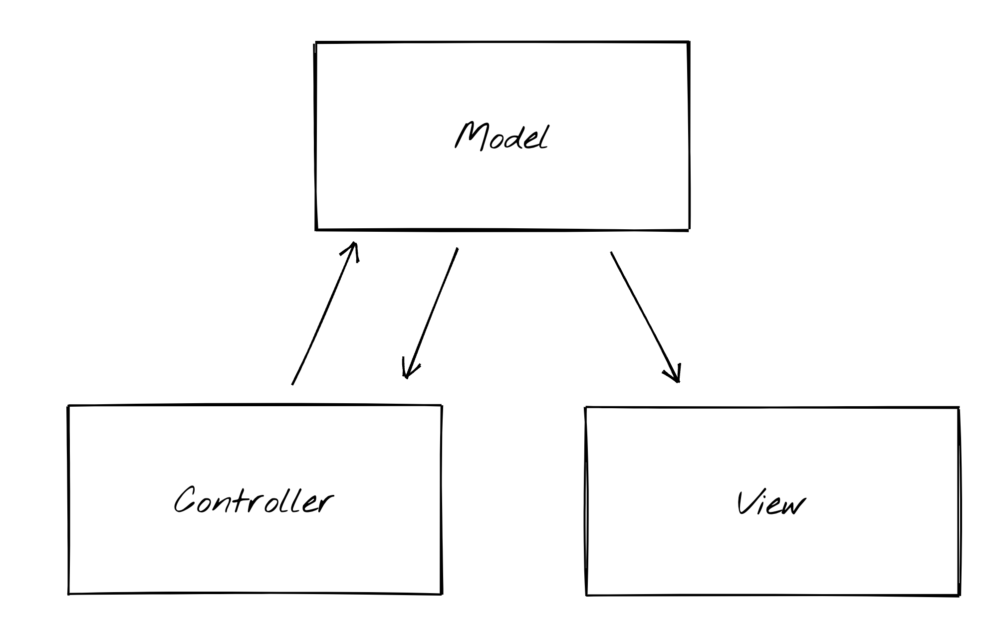

Javascript is used to
Writing a UI by simply attaching actions to events with no structure does not scale
For any non-trivial UI where we have many controls that come and go and therefore many event handlers that are all always primed at the same time, the logic ends up spread out across all the handlers in a way that makes it:
Many approaches have been developed over the years to make it more manageable to write UIs with event handlers.

MVC stands for Model-View-Controller, describing the three components to this architecture
How this gets instantiated in different applications depends on both the application being developped and the programming language being used. For instance, whether the view or the controller is a single object or multiple objects depends on application and language.
The controller calls the model using the actions that the model provides. So the controller need to know about the model. In most uses of MVC, the model doesn't know about the controller or the view. It provides actions for the controller to imvoke. But how does the view know when to update itself to reflect model changes? How does the model tell the view to update if the model doesn't know anything about the view?
The model and the view are in a Publisher-Subscriber relation. Publisher-Subscriber is a way to structure code (a so-called design pattern) when you have part of the system creating values (the publisher) that other parts of the system are interested in using (the subscribers), and when you do not want to hard-code into the publisher which subscribers should get the values created. In a Publisher-Subscriber pattern, the publisher has a way to notify subscribers that a new value has been created, and subscriber can dynamically subscribe (and potentially unsubscribe) to these notifications during program execution.
Here's how to implement a simple Publisher-Subscriber pattern in Python:
class Publisher:
def __init__(self):
self._subscribers = {}
def publish(self, channel, v):
if channel in self._subscribers:
for m in self._subscribers[channel]:
m(v)
def subscribe(self, channel, f):
if channel in self._subscribers:
self._subscribers[channel].append(f)
def channel(self, channel):
self._subscribers[channel] = []
class Subscriber:
def __init__(self, name):
self._name = name
def receiveApples(self, v):
print(f"{self._name} received apples value {v}")
def receiveOranges(self, v):
print(f"{self._name} received oranges value {v}")
def setup():
# Create publisher.
p = Publisher()
# Create channels on the publisher.
p.channel('apples')
p.channel('oranges')
# Create subscribers.
alice = Subscriber('Alice')
bob = Subscriber('Bob')
charlie = Subscriber('Charlie')
# Subscribe to publisher.
p.subscribe('apples', alice.receiveApples)
p.subscribe('oranges', bob.receiveOranges)
p.subscribe('apples', charlie.receiveApples)
p.subscribe('oranges', charlie.receiveOranges)
return p
def test():
p = setup()
# Test:
print('------------------------------------------------------------')
p.publish('apples', 66)
print('------------------------------------------------------------')
p.publish('oranges', 99)
I'm using Python here just to show that Publisher-Subscribe is not Javascript-specific.